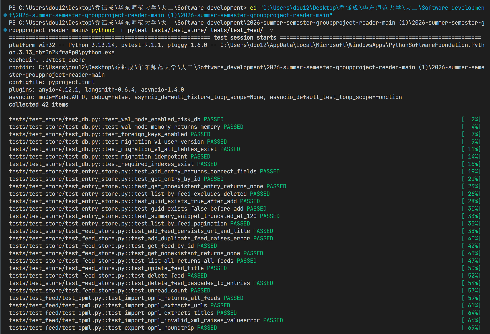
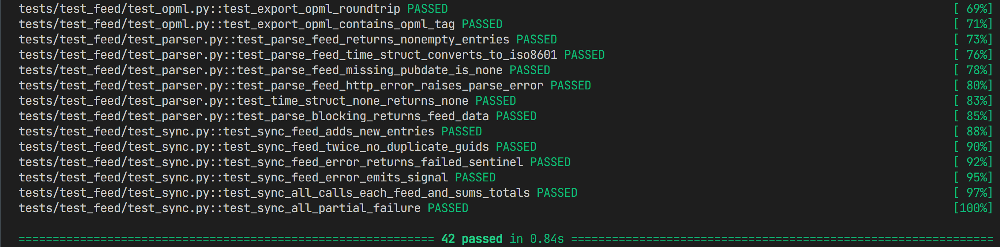
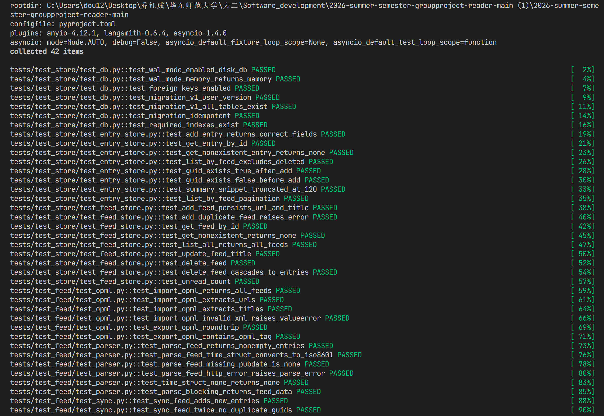
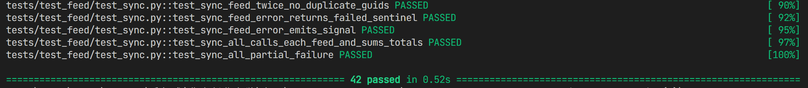

Phase 1 的目标是搭建整个项目的"地基"——在还没有任何界面的情况下，把数据怎么存、RSS 怎么拉取、文章怎么写进数据库这三件核心的事情做完，并用测试证明它们能正确运行。
整个数据层（store/）和核心逻辑层（core/）使用的全是纯 Python 标准库或跨平台库，不依赖任何操作系统特有的 API。这意味着：
.db 文件可以跨系统打开| 矛盾点 | 具体描述 | 风险等级 |
|---|---|---|
| 路径分隔符 | Windows 用反斜杠 \，macOS/Linux 用斜杠 /。app/app.py 里的默认数据库路径已用 pathlib.Path 处理，但后续代码需要保持这个习惯 |
中 |
| Windows Long Path 限制 | 本次开发中 PySide6-Essentials 因路径超 260 字符无法安装，导致 PySide6.QtCore 无法正常加载。测试时用降级方案绕过，但 UI 运行时需要完整安装 |
中 |
| SQLite 并发写入 | 内存数据库（:memory:）在多个异步任务并发写入时存在锁竞争。生产环境用磁盘 DB + WAL 模式 + timeout=30 可承受，但极高并发场景需关注 |
中 |
| 文件系统大小写 | Windows 文件系统不区分大小写，macOS/Linux 区分。模块导入路径如果大小写写错，在 Windows 上正常运行，迁移到 Linux CI 时会报 ModuleNotFoundError |
中 |
| platform 包名冲突 | 项目的 platform/ 目录遮蔽了 Python 标准库的 platform 模块，已在 __init__.py 中修复，但需注意后续代码不要直接 import platform |
低 |
| 测试名称 | 验证的事情 | 结果 |
|---|---|---|
| test_wal_mode_enabled_disk_db | 磁盘数据库成功开启 WAL 模式（提升并发读写性能） | PASS |
| test_wal_mode_memory_returns_memory | 内存数据库 WAL 模式返回 "memory"（SQLite 规范行为，不报错） | PASS |
| test_foreign_keys_enabled | 外键约束已开启，删除 Feed 时会级联删除文章 | PASS |
| test_migration_v1_user_version | v1 迁移完成后数据库版本号正确为 1 | PASS |
| test_migration_v1_all_tables_exist | 10 张表（feeds/entries/content/notes/tags 等）全部建立成功 | PASS |
| test_migration_idempotent | 重复执行迁移不会报错、不会重建表（幂等性） | PASS |
| test_required_indexes_exist | 加速查询的索引（按 feed_id、按发布时间等）已建立 | PASS |
| test_add_feed_persists_url_and_title | 添加订阅源后，URL 和标题被正确存入数据库 | PASS |
| test_add_duplicate_feed_raises_error | 添加重复 URL 时正确抛出 DuplicateFeedError，不会产生重复数据 | PASS |
| test_delete_feed_cascades_to_entries | 删除订阅源后，该源下的所有文章也被自动删除（级联删除） | PASS |
| test_unread_count | 未读计数接口正确返回该源下未读文章数量 | PASS |
| test_list_by_feed_excludes_deleted | 获取文章列表时，软删除的文章不会出现在结果中 | PASS |
| test_guid_exists_true/false | 通过 GUID 判断文章是否已存在（去重的基础） | PASS |
| test_summary_snippet_truncated_at_120 | 列表摘要截取前 120 字符，防止界面显示过长 | PASS |
| test_list_by_feed_pagination | 分页查询（limit/offset）正确工作 | PASS |
| 测试名称 | 验证的事情 | 结果 |
|---|---|---|
| test_parse_feed_returns_nonempty_entries | 解析本地 RSS fixture，能正确提取 3 篇文章 | PASS |
| test_parse_feed_time_struct_converts_to_iso8601 | RSS 的发布时间格式（time_struct）被正确转为 ISO 8601 标准格式 | PASS |
| test_parse_feed_missing_pubdate_is_none | 没有发布时间的文章，pubdate 字段为 None 而非报错 | PASS |
| test_parse_feed_http_error_raises_parse_error | HTTP 404 时正确抛出 FeedParseError，不会崩溃 | PASS |
| test_import_opml_returns_all_feeds | 从 OPML 文件导入 3 个嵌套的订阅源，全部识别 | PASS |
| test_export_opml_roundtrip | 导出再导入，URL 和标题与原始数据完全一致（往返一致性） | PASS |
| test_sync_feed_adds_new_entries | 同步一个 Feed 后，新文章被写入数据库 | PASS |
| test_sync_feed_twice_no_duplicate_guids | 同步同一个 Feed 两次，文章不会出现重复（去重机制有效） | PASS |
| test_sync_feed_error_emits_signal | 同步失败时，Qt 信号被正确发射，UI 层可以收到错误通知 | PASS |
| test_sync_all_calls_each_feed_and_sums_totals | 批量同步多个 Feed，每个都被执行，新增文章数正确汇总 | PASS |
| test_sync_all_partial_failure | 一个 Feed 同步失败不影响其他 Feed 继续同步（容错机制） | PASS |
以下截图为在本机 Windows 11、Python 3.13.14 环境下运行 python3 -m pytest tests/test_store/ tests/test_feed/ -v 的完整输出。




| 文件 | 说明 | 状态 |
|---|---|---|
pyproject.toml | 项目依赖、ruff 代码规范、pytest 配置 | 已交付 |
main.py | 程序入口，qasync 事件循环集成 | 已交付 |
app/state.py | 全局状态单例 AppState | 已交付 |
app/app.py | MercuryApp 应用类（Phase 1.4 桩版本） | 已交付 |
store/db.py | SQLite WAL 模式连接管理器 | 已交付 |
store/migrations.py | 版本化迁移管理，v1 建 10 张表 | 已交付 |
store/feed_store.py | 订阅源 CRUD 数据访问层 | 已交付 |
store/entry_store.py | 文章 CRUD + 分页 + 软删除过滤 | 已交付 |
core/feed/parser.py | RSS/Atom 异步解析，时间格式转换 | 已交付 |
core/feed/sync.py | 并发 Feed 同步服务，Qt 信号集成 | 已交付 |
core/feed/opml.py | OPML 导入导出工具 | 已交付 |
INTERFACE.md | 成员 B/C 调用的稳定 API 契约文档 | 已交付 |
tests/ | 42 个自动化测试用例，100% 通过 | 已交付 |
spec/SPEC_PHASE1.md | 技术规格文档（SQL Schema、API 签名） | 已归档 |
spec/TASK_PHASE1.md | 任务追踪文档（172 条全部 ✓） | 已归档 |
spec/AI_COLLAB_LOG.md | Phase 1 AI 协作开发过程记录 | 已归档 |